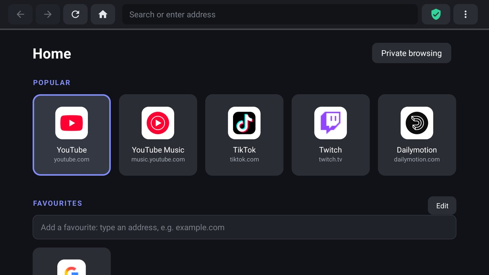
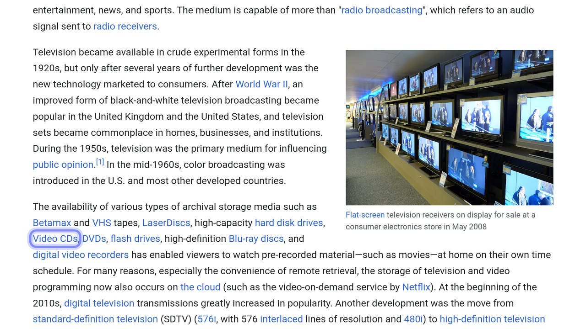
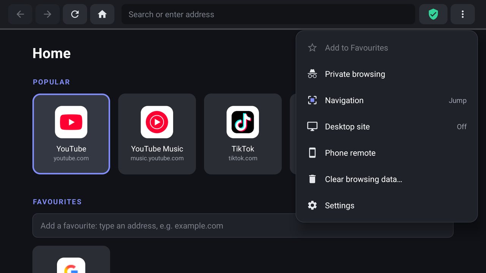

mkTV: the web browser made for your TV remote
A free, open-source browser for Android TV and Google TV. It blocks ads, lets you reach any button on any website with the D-pad, plays videos full screen, and turns your phone into a remote and keyboard.

mkTV in 30 seconds, on a real Google TV.
See mkTV on a real TV
Real screenshots from mkTV running on a Google TV, controlled with the normal remote.







Example content: Wikipedia (CC BY-SA), Merriam-Webster, and "Big Buck Bunny" © Blender Foundation (CC BY 3.0). Site names and logos belong to their owners; mkTV is not affiliated with them.
An Android TV browser that is actually easy to use
Websites are made for mice and touchscreens. mkTV makes them work from the sofa with nothing but your TV remote.
Built-in ad blocker
Over 77,000 ad and tracker domains blocked, pop-ups and click-traps removed, tracking parameters stripped from links.
Remote-friendly jump navigation
Arrow keys jump straight to the next button, link or video. Hold ▲ or ▼ to reach a site's top or bottom bar. Prefer a mouse pointer? Switch any time.
Full-screen watch mode
When a video plays, a simple dock appears: play, seek, next, and true full screen. Streams can also open in a built-in native player.
YouTube in TV mode
YouTube opens in its TV layout, so the remote feels natural. Sound turns on by itself, and video ads are skipped where possible.
Private browsing
A separate private profile with nothing saved. History, cookies and cache are wiped when you leave it.
A home screen of tiles
Popular sites, your favourites and recent pages as big, easy tiles. The top bar hides itself so pages get the full screen.
Use your phone as a TV remote and keyboard
Typing with a D-pad is painful. With mkTV you scan a code and type on your phone instead. No app to install.
- Open ⋮ → Phone remote on the TVA QR code appears.
- Scan it with your phone's cameraYour phone needs to be on the same Wi-Fi as the TV.
- Control everythingD-pad, OK, Back, play/pause and seek, type into search boxes, or send a website to the TV.

Making every TV smart: Android TV today, LG and Samsung next
MKTVHub's goal is bigger than one platform. mkTV keeps its core ideas (blocking rules, page scripts, the phone-remote protocol) separate from Android so they can be ported. Developers are welcome to help.
Frequently asked questions
Common questions about browsing the web on a TV with mkTV.
What is the best way to browse the web on Android TV?
Use a browser designed for the remote. mkTV lets the arrow keys jump between buttons, links and videos, so you never have to steer a slow mouse pointer, and you can type with your phone instead of the on-screen keyboard.
Does mkTV block ads?
Yes. mkTV blocks requests to more than 77,000 known ad and tracker domains, removes pop-ups and click-trap overlays, and strips tracking parameters from links. On YouTube it removes ad slots from the page data and skips video ads where it can, but no ad blocker catches every ad.
Can I use my phone as a remote and keyboard for my TV browser?
Yes. In mkTV open the menu and choose Phone remote, then scan the QR code with your phone. Your phone browser becomes a D-pad, media remote and keyboard. Both devices must be on the same Wi-Fi and no app install is needed.
Is mkTV free?
Yes. mkTV is free and open source under the Apache 2.0 license, with no accounts, no analytics and no ads of its own.
Does mkTV work on Fire TV, LG or Samsung TVs?
mkTV runs on Android TV and Google TV. Fire TV runs Android and may work by sideloading, but it is untested. LG webOS and Samsung Tizen ports are planned and open to contributors.
The phone remote says "This site can't be reached". What do I do?
Make sure the phone is on the exact same Wi-Fi as the TV (its IP should start like the TV's, for example 192.168.0.), turn off mobile data and any VPN or ad-blocker on the phone, and scan the QR code that is on the TV now, because the code changes each time mkTV restarts. Some routers block Wi-Fi devices from seeing each other (client isolation, common on guest networks).
Does mkTV work with a VPN on the TV?
Yes. Most VPNs, such as NordVPN, Proton and Surfshark, keep your home network outside the tunnel, so the phone remote keeps working. If mkTV shows a VPN warning on the Phone remote screen, turn on Allow LAN or local network access in the VPN app, or exclude mkTV with split tunneling.
Why doesn't Share Wi-Fi show my network name?
Android only reveals the Wi-Fi name to apps allowed to use location, and only while Location is turned on in the TV settings. You can also type the name once and mkTV remembers it.
Do Netflix, Prime Video and Disney+ work in mkTV?
mkTV supports copy-protected video, but each service decides what a browser may play. Some limit quality or block TV browsers, so their own TV apps may work better.
How do I install mkTV on my TV?
Download mkTV.apk from the MKTVHub GitHub Releases page and install it with adb or a sideloading app such as Downloader or Send Files to TV. You can also build it from source with Gradle. mkTV needs Android 7.0 or newer.
Install mkTV on your Android TV
Free download. No account, no Play Store needed.
- Download the APKmkTV.apk (latest version, 4.7 MB, Android 7.0+). All versions are on the Releases page.
- Get it onto the TVUse a sideloading app such as Downloader or Send Files to TV, or from a computer:
adb install mkTV.apk - Open mkTVIt appears in your TV's app row. Press ⋮ → Phone remote to pair your phone.
Or build it yourself (JDK 17, Android SDK 35):
git clone https://github.com/MKTVHub/mkTV.git && cd mkTV ./gradlew assembleDebug adb connect <tv-ip>:5555 adb install -r app/build/outputs/apk/debug/app-debug.apk
Enjoying mkTV? It's free, with no ads and no tracking. A GitHub star helps other TV owners find it.
★ Star mkTVWant to contribute? Start with AGENTS.md, CONTRIBUTING.md and the roadmap.